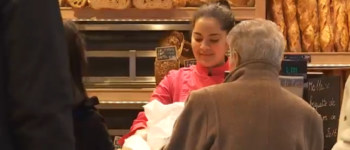

TF1
Meilleure baguette de paris : "Une croûte fine mais croustillante, c’est top"
Mickaël Reydellet et Florian Charles ont reçu jeudi soir, le prix de la meilleure baguette de Paris. Aujourd’hui associés dans une boulangerie du VIe arrondissement, rue Madame, ils ont commencé à pétrir le pain à 15 ans.
Lire la suite